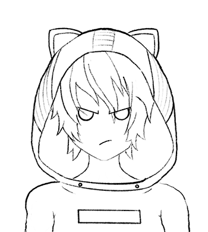

Expresiones faciales
Mira estas expresiones faciales e intenta incluirlas en tus dibujos.

Para que tu personaje parezca enamorado, reemplaza sus ojos con dos corazones redondeados. Puedes agregar otros tres corazones dentro para crear un efecto divertido.

Una expresión feliz en anime utiliza dos gruesas líneas curvadas para los ojos y una boca ancha para crear una cara feliz y reída.

Una expresión facial de enfado se puede lograr apuntando las cejas hacia el centro. Los ojos usan una línea gruesa con un semicírculo por debajo. La boca está ligeramente curvada.